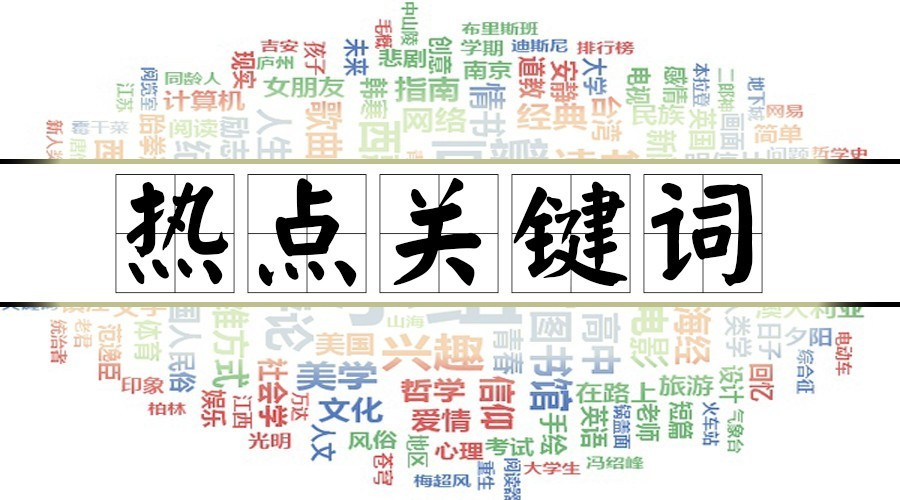
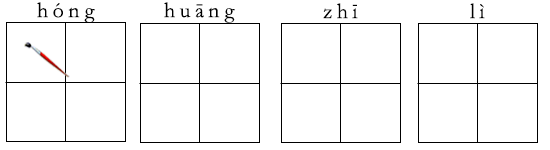
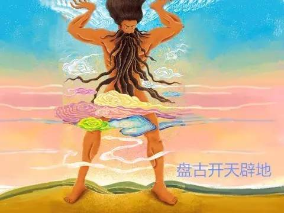
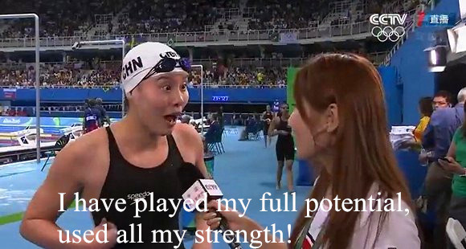

2017-1-15阅读（28,933）


在吃瓜群众看来，运动员赛后采访的正常流程应该是这样的：感谢国家，感谢教练，感谢父母，有困难但是克服了，不如预期但是尽力了……等等这种励志发言。
【有套路的地方，就有反套路。】
日前，里约奥运会女子100米仰泳决赛后，中国队队员傅园慧接受记者采访， 她的画风是这样的：
那个，傅童鞋，你是神魔附体了吗？
还有，你说的洪荒之力是什么鬼？
CIO小讲堂
洪荒之力，英译the power of the ancients， prehistorical power. 一般用来形容非常强大的力量。
远古神话：强大的力量
洪荒特指上古时代，远古时代。《山海经》记载的夸父逐日、精卫填海、大禹治水等等神话故事均发生于这一时期。
古人云：天地玄黄，宇宙洪荒。传说天地初开之时，曾经有过一次大洪水，几乎毁灭了整个世界。因此，洪荒之力指的是如天地初开之时这种足以毁灭世界的力量。不破不立，洪荒之力不仅可以毁灭旧世界，还可以重塑新世界。它是一种强大的力量。

神魔小说：玄幻的灵力
说实在的，咱今天能看到神魔小说，还得归功于迅哥儿呢。没错，就是那个酷爱走路，院里有两棵枣树的男人。
鲁迅首次提出“神魔小说”的概念，并且把那些“并非儒和佛，或道和佛，或儒释道和白莲教”的内容定义为神魔小说。
《花千骨》中的“洪荒之力”是封印在女主体内的妖神之力。长留上仙白子画将力量封印在爱徒花千骨体内，但是女主角经历太多悲痛，最终释放洪荒之力成为妖神。
老外怎么看

/我已经尽全力了/
原来翻译成了英文，完全没有那种神魔色彩了呢。
在小君看来，能与我洪荒之力匹敌的，非《星球大战》里的原力莫属了：
/愿原力与你同在/
新技能Get：如何应对领导的施压
普通青年：我已经尽力了。
文艺青年：我已承受生命不能承受之重。
二逼青年：我已经使出了洪荒之力。
装逼青年：The force is with me.
文章原创丨版权所有丨转发请注出处
内容制作：高倩、金杰、朱铭宇